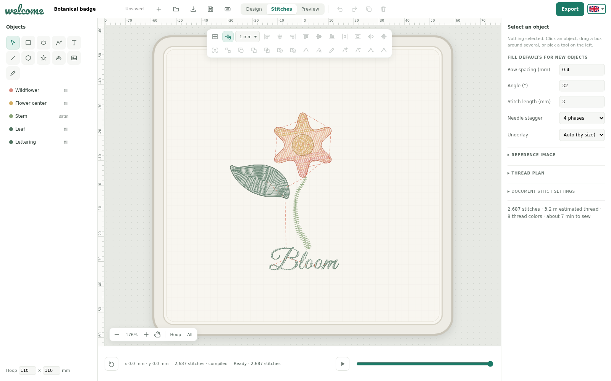
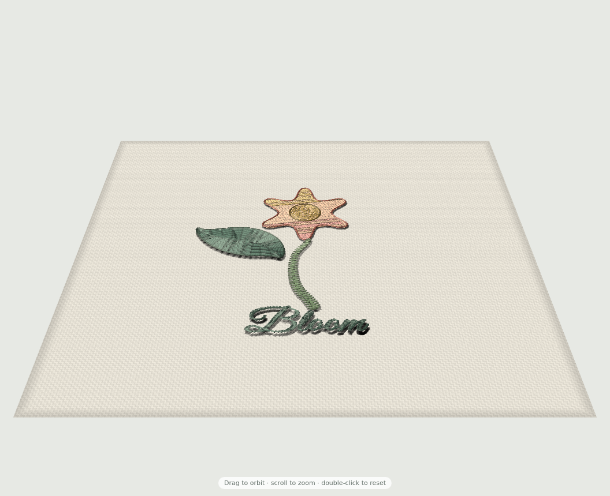

Free · open source · no account
Sew it on screen before you sew it on cloth.
Welcome is an embroidery editor that lives in your browser. Draw shapes, set lettering, fill with satin and tatami, and play back every stitch. Nothing to install, and your design never leaves your device.
- Runs offline
- JEF & VP3 export
- GPL-3.0-or-later

Stitch types
Three ways to lay thread, all in your hands.
Running stitch
Outlines, details and lettering strokes, with adjustable stitch length.
Satin column
Smooth, glossy bands for borders and narrow shapes, with pull compensation and underlay.
Tatami fill
Textured fills for large areas, with holes, row spacing, angle and needle stagger.
3D preview
Turn your design around before you sew it.

3D thread preview
See fills and outlines as thread on fabric, and drag to orbit, scroll to zoom.
Features
Everything for a finished design.
Vector drawing
Pen and Bézier paths, rectangles and ellipses, with align, group, flip and clipping masks. Edit nodes and handles while the cut previews live.
Stitch control
Running stitches, satin columns and tatami fills, with holes, underlay, pull compensation and needle stagger.
Stitch preview
Play the sewing order stitch by stitch, with jumps and trims shown. Sewing tips flag fills that are too small or satin that is too narrow.
Lettering
Bundled fonts with spacing, alignment and line height, placed on the design like any other object, or set along a path.
Trace a picture
Load a reference image and trace over it to digitize.
Machine files
Export JEF and VP3 files directly from the browser. Exports are checked by decoding them with pinned open-source readers.
Your design stays on your device.
The editor is plain static files that run entirely in your browser. No account, no upload. Once it has loaded you can keep working with the network off.
AI agents · MCP · desktop app
Design by talking to your AI.
The Welcome desktop app has a built-in MCP server. Press Agent, give the private link to Claude, ChatGPT or any assistant that supports MCP, and describe what you want. The agent draws, sets stitches, previews and exports in your open editor, and every change goes through undo and redo.
document_applyembroidery_previewembroidery_exportHow it works
From idea to machine file in three steps.
- 1
Draw or trace
Start from shapes, paths and lettering, or trace over a reference picture you load.
- 2
Digitize
Choose a stitch type and density for each object, and set the sewing order.
- 3
Preview and export
Check the simulation, then download a JEF or VP3 file for your machine.